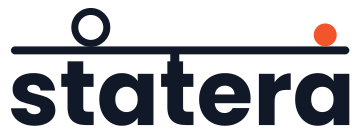

Il ritorno dell'AI, oggi
Investire in AI non basta.
56%
Più della metà dei CEO non ha visto alcun ritorno dall'AI.
Il 56% dei CEO non ha visto benefici significativi né sui ricavi né sui costi.
1 su 4
Solo un progetto AI su quattro ripaga l'investimento.
Secondo i CEO solo il 25% delle iniziative di AI ha dato il ritorno atteso, e solo il 16% è stato esteso a tutta l'impresa.
Fonte: IBM Institute for Business Value, CEO Study 2025, 2.000 CEO
Il problema non è la tecnologia, ma come entra nei processi.
Ti riconosci in una di queste frasi?
«I miei dipendenti usano ChatGPT e non so per fare cosa.»
Account personali, nomi di clienti, prezzi e documenti interni incollati in strumenti che nessuno ha scelto.
«Mi dicono che c'è l'AI Act e non so se mi riguarda.»
Formare il personale e dichiarare l'uso dell'AI sono obblighi già in vigore. Ma nessuno in azienda ne è responsabile.
«Ho comprato le licenze e non è cambiato niente.»
Strumenti acquistati senza un obiettivo, senza un responsabile e senza un numero da guardare a fine anno.
Intanto i tuoi concorrenti si stanno muovendo.
55%
delle grandi imprese
250 addetti e oltre
30%
delle medie imprese
da 50 a 249 addetti
17%
delle piccole imprese
da 10 a 49 addetti
Imprese dell'Unione europea che usano già l'intelligenza artificiale. Fonte: Eurostat, 2025.
Non lo leggerai sui giornali. Te ne accorgerai quando un cliente ti dirà che un'altra azienda offre lo stesso prodotto a un prezzo più basso, o lo consegna prima di te.
Non è un problema di tecnologia.
È che nessuno, in azienda, ha il compito di decidere.
Da dove si comincia
Prima la strategia, poi la tecnologia.
Un tecnico risponde alla domanda «come si fa». Prima però serve rispondere a «cosa conviene fare, e perché»: è una decisione d'impresa, non informatica. Per questo si parte da un Chief AI Officer.
Senza una guida
Se parti dallo strumento
- Compri ciò che il fornitore ha da vendere, non ciò che ti serve.
- Ogni reparto fa la sua prova, e nessuna diventa un modo di lavorare.
- Regole e responsabilità arrivano dopo il primo problema.
- A fine anno non sai dire cosa hai ottenuto.
Con un Chief AI Officer
Se parti dalla strategia
- Decidi prima dove l'AI porta valore alla tua impresa, e dove no.
- Scegli pochi progetti, con un responsabile e un numero da raggiungere.
- Regole, dati e formazione sono chiari dal primo giorno.
- Gli strumenti e i tecnici si scelgono dopo, e si pagano meno.
Chi non è il Chief AI Officer, e chi è.
È il dirigente che risponde al titolare di tutto ciò che riguarda l'AI in azienda: scelte, regole, persone e risultati.
Il CAIO non è
- Un programmatore o un esperto di modelli che lavora da solo.
- Il responsabile informatico con un titolo nuovo.
- Un rivenditore di piattaforme o di licenze.
- Un formatore che tiene un corso e se ne va.
- Un legale: lavora con il tuo, non lo sostituisce.
Il CAIO è
- Un dirigente che siede con la direzione e parla la lingua dei conti.
- Chi decide con te priorità, investimenti e regole sull'AI.
- Chi traduce norme come l'AI Act in scelte pratiche.
- Chi coordina tecnici, fornitori e consulenti verso un unico piano.
- Indipendente: non ha software né licenze da venderti.
Come funziona
Dalla diagnosi ai risultati, in quattro passi.
Ti fermi quando vuoi. Ogni passo ti lascia in mano qualcosa che puoi usare anche senza di noi.
1
Diagnosi
Il test gratuito, poi un check-up con un nostro specialista per leggere insieme il risultato e fotografare strumenti, dati e rischi.
2
Piano
In 30 giorni la tua azienda ha la mappa degli usi, le regole scritte e un piano con priorità e responsabili.
3
Inserimento
Scegliamo il CAIO giusto per il tuo settore e la tua dimensione, con un accompagnamento di almeno sei mesi.
4
Misura dei risultati
Ogni 90 giorni si misura, si corregge e si riparte, con un rapporto sui risultati.
Accompagnamento · almeno sei mesi
Un Chief AI Officer dedicato, su tre livelli.
| Cosa ottieni | PresidioL'AI sotto controllo | DirezioneL'AI nelle scelte dell'impresa | TrasformazioneL'AI nei processi e nei prodotti |
|---|---|---|---|
| Il ruolo del CAIO | Il tuo riferimento: un punto fisso con te e risposta quando serve | Un membro della direzione: partecipa alle riunioni in cui si decide | Un dirigente operativo: lavora accanto ai responsabili di reparto e di progetto |
| Inventario di strumenti, dati e rischi | Aggiornato ogni trimestre | Aggiornato ogni trimestre | Aggiornato ogni mese |
| Regole d'uso dell'AI | Politica aziendale e regole per i dipendenti | Più ruoli, responsabilità e canale di segnalazione | Più procedure per ogni sistema e ogni progetto |
| Conformità all'AI Act | Classificazione dei sistemi e obblighi già in vigore | Più piano di adeguamento e verifica dei fornitori | Più documentazione per i sistemi ad alto rischio |
| Formazione sull'AI | Per titolare e direzione | Per direzione e responsabili di reparto | Per tutto il personale, con percorsi per ruolo |
| Strategia | Indirizzi generali: dove usare l'AI e dove no | Piano annuale con priorità, budget e obiettivi | Piano pluriennale che ridisegna processi, prodotti e organizzazione |
| Scelta di strumenti e fornitori | Parere sugli acquisti principali | Selezione, contratti e controllo periodico | Più valutazione tecnica di modelli e architetture |
| Guida dei progetti AI | Parere prima dell'avvio di ogni progetto | Supervisione dei progetti prioritari | Guida diretta, con uno specialista tecnico |
| Misura dei risultati | Rapporto ogni 90 giorni | Più riesame con la direzione | Più indicatori per ogni progetto |
| Preparazione a ISO/IEC 42001 | Non previsto | Non previsto | Sistema di gestione pronto per la certificazione |

Un metodo, cinque fasi, cicli di 90 giorni.
La statera è la bilancia a un braccio: pesa spostando un solo contrappeso. Il metodo fa lo stesso con l'AI, mettendo a confronto ciò che può dare e ciò che può costare.
1
Fotografia
Cosa si usa oggi, chi lo usa e con quali dati.
2
Mappa
Dove l'AI serve davvero e dove è meglio aspettare.
3
Regole
Chi può fare cosa, con quali strumenti e quali controlli.
4
Piano
Priorità, costi, responsabili e numeri da raggiungere.
5
Guida
Ogni 90 giorni si misura, si corregge e si riparte.
I nostri CAIO
Nessuno diventa un nostro CAIO senza aver superato la qualifica caio.center.
Il titolo di Chief AI Officer oggi lo può usare chiunque. Per questo abbiamo fissato noi l'asticella: quattro prove, uguali per tutti, prima di affidare a qualcuno la tua impresa. Poi scegliamo il CAIO giusto per il tuo settore e la tua dimensione.
1
Esperienza di direzione verificata
Ha guidato un'impresa, una funzione o progetti complessi. Controlliamo percorso e referenze, una per una.
2
Esame sulle norme
AI Act, leggi nazionali, protezione dei dati e ISO/IEC 42001, più una certificazione professionale rilasciata da un organismo accreditato.
3
Prova pratica sul Metodo Statera
Un caso d'impresa da risolvere con le cinque fasi e i modelli di lavoro: lo stesso metodo, per tutti i nostri CAIO.
4
Primo incarico affiancato
Il primo cliente lo segue insieme a un CAIO già qualificato. Solo dopo lavora in autonomia.
E ogni anno si ricomincia.
La qualifica si rinnova con l'aggiornamento sulle norme e con una verifica di indipendenza: i nostri CAIO non vendono software e non prendono compensi dai fornitori che ti consigliano.
La squadra cresce
Stiamo selezionando nuovi Chief AI Officer per settore e per territorio, in Europa e in Svizzera.
Scopri come diventare CAIOParliamo della tua azienda.
Raccontaci a che punto sei con l'intelligenza artificiale: partiamo da lì.
caio.center è un servizio di Indoostry Group SA, Lugano.